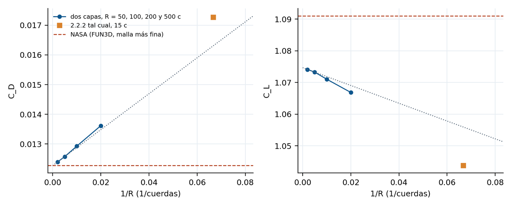
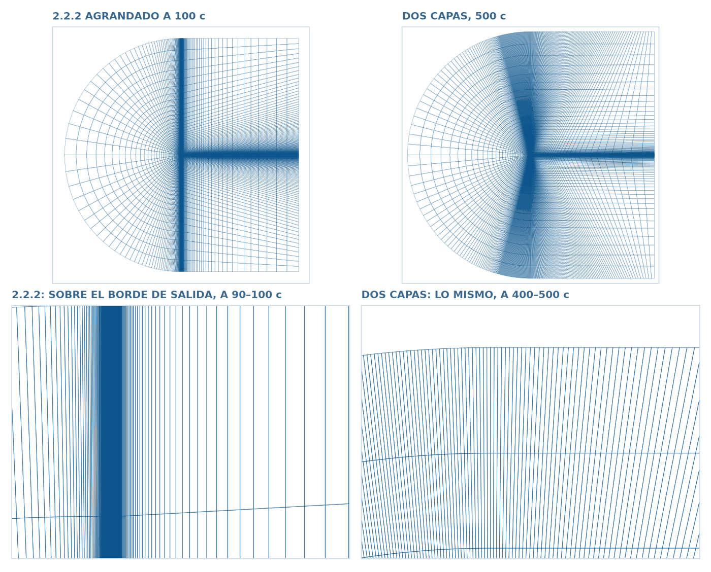
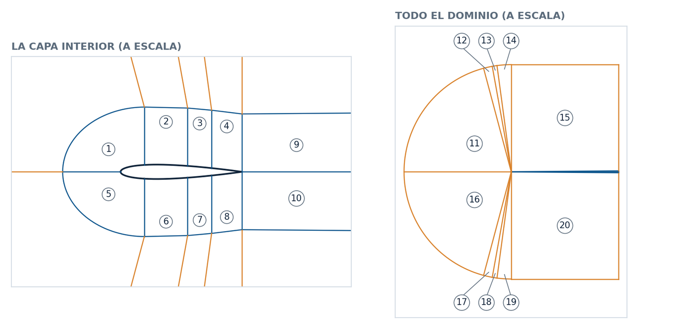
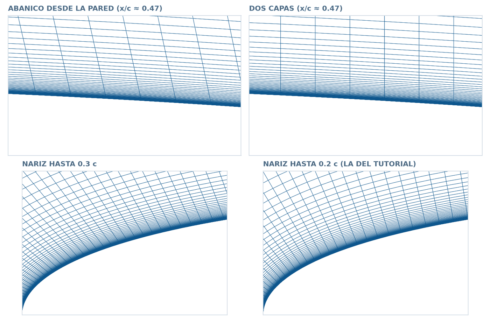
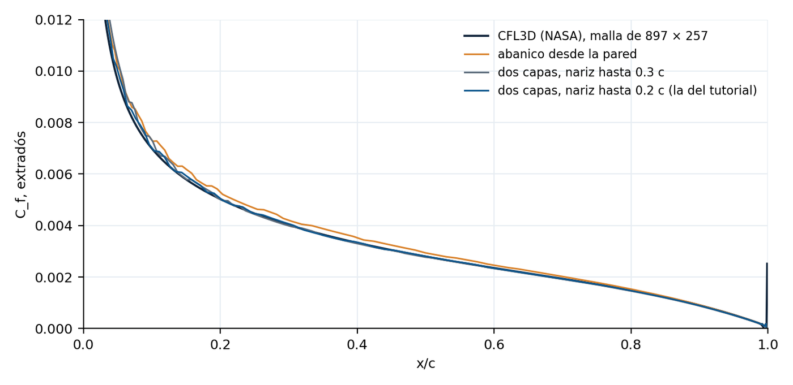
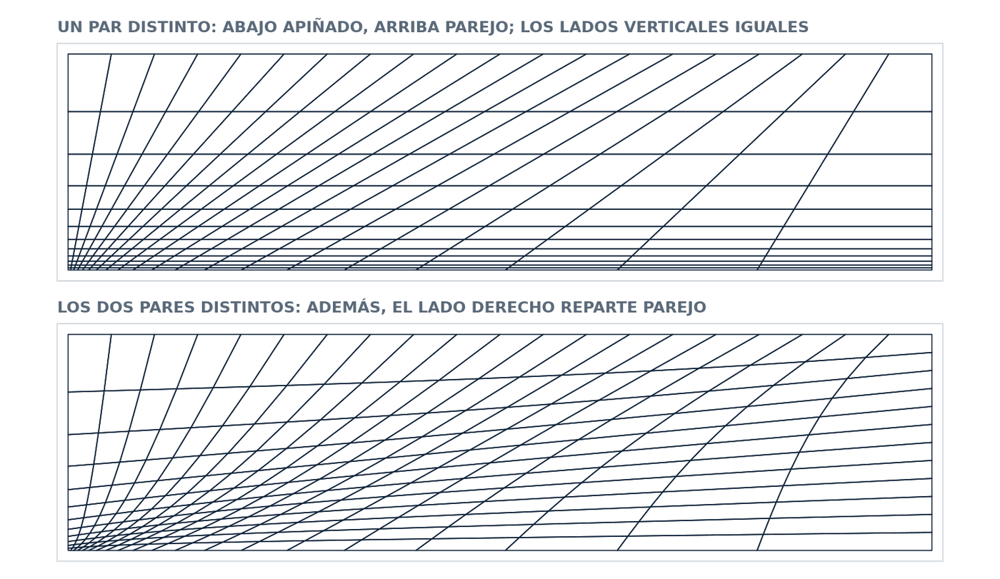
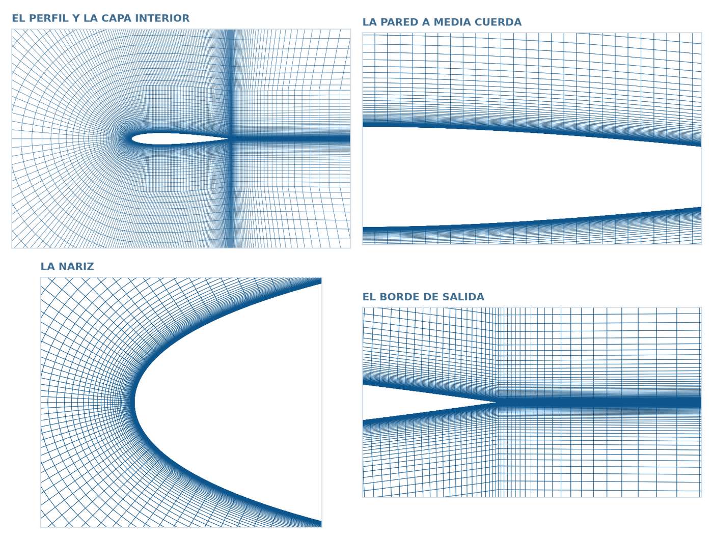
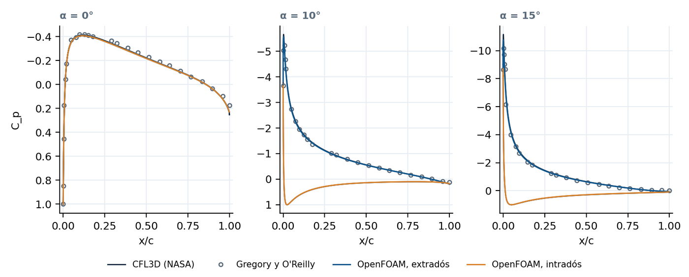

The C-grid of Tutorial 2.2.2 becomes the inner layer of a larger mesh: a fan of blocks opens out to an arc 500 chords away, as in NASA's validation grids. With fifteen chords the drag came out 41 % too high; with this mesh it lands within 1 % of NASA.
Gmsh · Tutorial 2.2.3
El perfil alar con el campo lejano a 500 cuerdas
La C del Tutorial 2.2.2 se vuelve la capa interior de una malla más grande: un abanico de bloques se abre hasta un arco a 500 cuerdas, como las mallas de validación de la NASA. Con quince cuerdas la resistencia salía 41 % alta; con esta malla queda a 1 % de la NASA.
Gmsh · Tutorial 2.2.3
Das Profil mit dem Fernfeld bei 500 Sehnen
Das C-Netz aus Tutorial 2.2.2 wird zur inneren Schicht eines größeren Netzes: ein Fächer von Blöcken öffnet sich bis zu einem Bogen in 500 Sehnen Abstand, wie in den Validierungsnetzen der NASA. Mit fünfzehn Sehnen lag der Widerstand 41 % zu hoch; mit diesem Netz liegt er 1 % neben der NASA.
Estimated reading: 55 minLectura estimada: 55 minLesedauer: ca. 55 minLevel: undergraduateNivel: licenciaturaNiveau: BachelorVerified on Gmsh 4.15.2 and OpenFOAM 13Verificado en Gmsh 4.15.2 y OpenFOAM 13Geprüft mit Gmsh 4.15.2 und OpenFOAM 13
Full English translation in preparation. Each section below carries a summary of its content; the complete text, figures and tables are available in the Spanish version, which the ES button above selects.
Take the C-grid of Tutorial 2.2.2 to a far field 500 chords away, as in NASA's NACA 0012 validation case: keep it as an inner layer, add a fan of blocks out to an arc, split the radial progression at a node so that it continues without a jump, apply the rule by which Gmsh fills a transfinite block, and check the result against NASA in OpenFOAM 13.
The problem
Fifteen chords are not enough, and the C-grid does not grow
A lifting airfoil carries circulation, whose induced velocity decays only as 1/R; a free-stream boundary 15 chords away cuts it off, and the drag at 10 degrees comes out 41 % high. NASA places the boundary at 500 chords. The C-grid of Tutorial 2.2.2 cannot follow: its columns of cells keep their width up to the far field, and at 100 chords they are 0.002 by 10 chords, with 82 degrees of non-orthogonality.
The idea
A small C near the wall and a fan out to the far field
Two layers. The inner one is the C of Tutorial 2.2.2 half a chord from the wall, with vertical radials, so the mesh lines leave the wall almost perpendicular, which is what the skin friction depends on. The outer one opens like a fan to an arc centred on the trailing edge. A fan that started at the wall would tilt the lines by 15 degrees and the friction would come out 5 % high.
Step 1
The new parameters and the tolerance
Six new parameters: the far-field radius, the wake length, the fan angle, the far-field cell, the outlet cell and the thickness of the inner layer. Geometry.Tolerance must be lowered: the extrusion merges nodes closer than 1e-8 of the model diagonal, which at 1000 chords is larger than the first cell.
Step 2
NASA's NACA 0012 and where the nose ends
The contour of Tutorial 2.2.2 with one option more: NASA's definition of the NACA 0012, which closes the trailing edge by extending and rescaling the profile. The nose block ends at 0.2 chords instead of the maximum thickness, which keeps the first mesh lines within 3 degrees of the wall normal.
Step 3
The C of Tutorial 2.2.2, half a chord from the wall
The inner layer ends exactly at node K of the radial progression, so the outer layer continues it with the same ratio and no jump. At the outlet the layer cannot carry the wall cells, and grows instead from the outlet cell size within the same K cells.
Step 4
The outer layer, opening to a 500-chord arc
The far-field arc is centred on the trailing edge. The blocks above the airfoil share the fan angle in proportion to their cells, so that all far-field cells above the airfoil have the same width; the nose takes the rest of the half circle.
Steps 5 and 6
Twenty blocks and the opposite-sides rule
Gmsh fills a transfinite block with the average of the spacing of its opposite sides, so at most one pair of opposite sides may be spaced differently. That is why the mesh has two layers: a single wake block from the trailing edge to the arc would have both pairs different and its lines would fan out from the trailing edge.
Step 7
Extrusion and groups, as in Tutorial 2.2.2
The extrusion and the physical groups of Tutorial 2.2.2, with twenty blocks instead of ten; the macro that computes the face indices does not change.
The check
The mesh against NASA's grids and NASA's numbers
With Spalart-Allmaras at Re = 6e6, the mesh gives a drag coefficient within 1 % of NASA's at 0 and 10 degrees and a skin friction within 1 % of CFL3D; the lift at 10 degrees is 1.5 % lower, almost all of it compressibility, since NASA computes at Mach 0.15. A mesh with every size halved changes lift by 0.2 % and drag by 0.7 %.
Three variants, each one number away: a smaller far field, whose drag error follows 1/R; a narrower and a wider fan, which leave the wall untouched and change the kink at the edge of the inner layer; and the nose ending at the maximum thickness, which tilts the first mesh lines and raises the friction.
Key points
What to keep from this guide
The far field of a lifting airfoil must be hundreds of chords away; a C-grid reaches it only if its columns open into a fan; the fan must not start at the wall; a radial progression can be split at a node without a jump; and at most one pair of opposite sides of a transfinite block may differ.
Common mistakes
Mistakes that a quality check does not catch
Judging the far field by the drag at zero lift; enlarging the C-grid by raising R; leaving the default geometric tolerance with a 1000-chord model; fanning from the wall; and filling a block whose two pairs of sides are spaced differently.
Sources
References
Gmsh reference manual and source (meshGFaceTransfinite.cpp); NASA Turbulence Modeling Resource, 2D NACA 0012 validation and numerical analysis; Ladson (1988); Gregory and O'Reilly (1970); Thomas and Salas (1986).
Objetivos de aprendizaje
Qué se debe poder hacer al terminar
El Tutorial 2.2.2 dejó una malla en C paramétrica con el campo lejano a quince cuerdas, y comprobó que a cero grados quince cuerdas bastan. Con ángulo de ataque ya no: a 10°, la resistencia sale 41 % más alta que la de la NASA. Este tutorial lleva la frontera a 500 cuerdas, como las mallas con que la NASA valida los modelos de turbulencia, sin tirar la malla del 2.2.2: la conserva como capa interior y le agrega, por fuera, un abanico de bloques.
Explicar por qué un perfil con sustentación necesita el campo lejano a cientos de cuerdas y estimar el error de un dominio pequeño.
Reconocer por qué la C del 2.2.2 no se puede agrandar sin más: sus columnas de celdas no crecen.
Construir una malla de dos capas: la C del 2.2.2 a medio cuerda del perfil y un abanico hasta un arco de 500 cuerdas.
Partir una progresión geométrica en un nodo, de modo que siga sin salto de un bloque al siguiente.
Aplicar la regla con que Gmsh llena un bloque transfinito: a lo más un par de lados opuestos puede repartir distinto.
Medir la inclinación de la malla junto a la pared, de la que depende la fricción.
Comprobar la malla contra las cifras de la NASA con OpenFOAM.
Qué hace falta. Gmsh 4.15.2 (gmsh.info) y, para la comprobación, OpenFOAM 13 (openfoam.org). Este tutorial supone el 2.2.2: DefineConstant, las macros Empalme y Razon, la primera celda a partir del y⁺ y los grupos físicos calculados se dan por sabidos. Los siete archivos .geo se reproducen completos.
Contra qué se compara. El caso de validación del NACA 0012 de la NASA (Turbulence Modeling Resource): número de Reynolds de 6·10⁶, flujo completamente turbulento con el modelo de Spalart-Allmaras y campo lejano a 500 cuerdas. La NASA publica las fuerzas de varios códigos, sus distribuciones de presión y fricción y un estudio de malla con mallas de hasta quince millones de celdas: es una referencia mucho más precisa que un dato experimental escalado.
El problema
Quince cuerdas no bastan, y la C no crece
En el 2.2.2, quince cuerdas bastaban para la resistencia a cero grados: con cincuenta, el \(C_d\) cambió 1 %. Con el mismo caso a 10°, la malla del 2.2.2 da \(C_D\) = 0.01728 y \(C_L\) = 1.0438, contra 0.01227 y 1.0910 de la NASA: la resistencia sale 41 % alta. La malla no tiene la culpa —la fricción sale bien—; la tiene la frontera.
La circulación llega lejos
Un perfil que sustenta lleva circulación \(\Gamma\), y lejos de él el flujo se parece al de un vórtice puntual con esa circulación, cuya velocidad decae sólo como \(1/R\). Con el teorema de Kutta-Yukovski, \(\Gamma = \tfrac12 U_\infty c\,C_L\), y la velocidad que induce a una distancia \(R\) es
Las condiciones de campo libre imponen la corriente sin perturbar en las caras de la frontera por donde el flujo entra, así que ahí borran esa velocidad. Es como si el perfil viera un ángulo de ataque un poco menor, en una cantidad \(\Delta\alpha\) del orden de \(u_\Gamma/U_\infty\): la sustentación baja, unos \(2\pi\,\Delta\alpha\), y la fuerza se inclina hacia atrás, de modo que aparece una resistencia de más, \(\Delta C_D \approx C_L\,\Delta\alpha\). Con la sustentación de estas corridas, \(u_\Gamma/U_\infty\) vale 0.55 % a 15 cuerdas y 0.017 % a 500.
Tabla 1.El tamaño del dominio a 10°. Spalart-Allmaras, \(Re\) = 6·10⁶, condiciones freestream en toda la frontera exterior. La primera fila usa la malla del 2.2.2 tal cual; las demás, la de este tutorial con -setnumber R (y L = R, hFar = R/10). La diferencia de \(C_D\) se mide contra la de 500 c. \(u_\Gamma/U_\infty\) es la velocidad que induciría en la frontera la circulación del perfil, y la última columna, cuántas veces cabe en el exceso de resistencia por unidad de sustentación, con \(C_{D,\infty}\) = 0.01227 extrapolado en \(1/R\). Las mallas de dos capas tienen de 50 800 celdas (50 c) a 66 156 (500 c).
La última columna comprueba la estimación con las corridas: el exceso de resistencia por unidad de sustentación vale entre 0.66 y 0.87 veces \(u_\Gamma/U_\infty\), en todos los tamaños. La sustentación sigue la misma cuenta: a 50 cuerdas, \(2\pi \times 0.7\,u_\Gamma/U_\infty\) predice que \(C_L\) baje 0.0075 respecto del de un dominio infinito, y baja 0.0078. Dicho de otro modo: el error de \(C_D\) va como \(1/R\), y con \(C_L\) ≈ 1 vale unas 0.056 cuerdas divididas entre el radio. Para que quede por debajo de 1 % hay que llegar a varios cientos de cuerdas, que es lo que hace la NASA.

Figura 1.El dominio, en 1/R. Las corridas de la Tabla 1. Con la malla de dos capas, \(C_D\) y \(C_L\) caen casi sobre rectas en \(1/R\); la punteada pasa por las de 200 y 500 c, y en \(1/R = 0\) da \(C_D\) = 0.01227, que es el de la NASA (0.01227). La de 15 c, con la malla del 2.2.2, queda fuera: su \(C_D\) está 6 % por encima de la recta. El \(C_L\) de la NASA es compresible, a Mach 0.15: la diferencia se explica en la prueba.
A cero grados no se nota. Sin sustentación no hay circulación, y el campo lejano puede estar mucho más cerca: por eso en la práctica del 2.2.2 pasar de 15 a 50 cuerdas cambió la resistencia 1 %. La conclusión de aquel tutorial era correcta para su caso; este tutorial empieza donde aquel caso deja de servir.
Por qué no basta con subir R
El archivo del 2.2.2 acepta -setnumber R 100, y la malla se genera sin protestar. El problema es su forma. Las radiales de las estaciones suben en vertical hasta una recta \(y = R\), de modo que cada columna de celdas sobre el perfil conserva su ancho hasta el campo lejano: la que sale del borde de salida mide 0.002 c de ancho a cien cuerdas de distancia, donde las celdas tienen casi diez cuerdas de alto.

Figura 2.Las columnas que no crecen. Arriba, el dominio completo de las dos mallas, a escala. Abajo, la misma región sobre el borde de salida, cerca del campo lejano. En la del 2.2.2 agrandada (izquierda) las columnas que salen del borde de salida conservan su ancho de 0.002 c hasta la frontera y forman una franja negra: celdas de 0.002 × 10 c, con aspecto de 5169 y 82° de no ortogonalidad. En la de dos capas (derecha), las columnas se abren en abanico y a 400 c miden del orden de una cuerda.
A 100 cuerdas, la no ortogonalidad llega a 82.2° en esas columnas —18 caras pasan de 70°— y la relación de aspecto a 5169: checkMesh responde «Failed 1 mesh checks». Con las celdas del borde de salida a la cuarta parte, el cálculo diverge.
A 200 cuerdas y más, gmshToFoam aborta con «Did not determine new position for face»: un problema distinto, de tolerancia, que se resuelve en el paso 1.
La NASA tiene otra salida: corregir la frontera con el campo de un vórtice puntual (Thomas y Salas, 1986), de modo que un dominio pequeño se comporte como uno infinito. OpenFOAM no trae esa condición de frontera, así que aquí se hace lo otro: llevar la frontera lejos con una malla preparada para eso.
La idea
Una C pequeña junto a la pared y un abanico hasta el campo lejano
La malla tiene dos capas. La interior es la C del 2.2.2 en pequeño: los mismos diez bloques, los mismos lazos y la misma numeración, a 0.48 c del perfil. La exterior va de esa C pequeña a un arco de 500 c con centro en el borde de salida: un bloque frente a cada curva de la C pequeña, diez más, que se abren en abanico.

Figura 3.Los veinte bloques. Trazados desde las curvas de perfil3_5_bloques.geo, con los números de sus superficies. En azul, la capa interior: los diez bloques del 2.2.2 a 0.48 c del perfil. En naranja, el abanico: un bloque frente a cada curva de la C pequeña, hasta el arco de 500 c con centro en el borde de salida. Los bloques 12, 13 y 14 (y 17, 18 y 19) ocupan juntos los 15° del arco sobre el perfil.
Por qué la capa interior
El abanico podría empezar en la pared: bastaría con mandar cada radial de estación directo a su punto del arco. Se probó, y la malla pasa todas las medidas de calidad —no ortogonalidad máxima de 41.7°, en la salida—, pero las líneas de la malla salen del perfil rectas hacia su punto del arco, inclinadas unos 15° respecto de la normal a la pared en todo el extradós. En una capa límite, la velocidad cambia muchísimo en la dirección normal a la pared y casi nada a lo largo de ella; una celda inclinada mezcla las dos direcciones, y la fricción, que es el gradiente en la pared, sale mal.

Figura 4.La inclinación de la malla junto a la pared. Arriba, la pared a media cuerda: con el abanico desde la pared las líneas salen inclinadas 15° hacia su punto del arco; con dos capas salen verticales. Abajo, la nariz: con la nariz hasta 0.3 c las líneas entre x/c = 0.02 y 0.10 salen 16° fuera de la normal, en promedio; hasta 0.2 c, 3°.

Figura 5.La fricción depende de la inclinación. \(C_f\) en el extradós a 10° con tres mallas a 500 c, contra CFL3D. Con el abanico desde la pared la fricción sale +5 % alta a media cuerda y ondula; con dos capas coincide con la de la NASA salvo en la nariz si ésta llega a 0.3 c. Las tres mallas tienen la misma primera celda y los mismos nodos sobre el perfil.
Con el abanico desde la pared, la fricción sale 5 % alta a media cuerda y el \(C_D\) de fricción, 0.00654 contra 0.00621 de la NASA. Con la capa interior, cuyas radiales son verticales como en el 2.2.2, la fricción coincide con la de CFL3D dentro de 1.1 % en x/c = 0.1, 0.3, 0.5 y 0.8. La capa interior protege la pared; el abanico sólo empieza donde la malla ya no resuelve la capa límite.
La inclinación no la mide checkMesh. La no ortogonalidad compara la normal de cada cara con la recta que une los centros de las dos celdas vecinas; una columna de celdas inclinada pero regular tiene poca. Lo que importa junto a la pared es otra cosa: el ángulo entre la normal a la pared y la primera línea de la malla que sale de ella. Aquí se midió cara por cara del perfil, y está en la Tabla 5.
Paso 1
Los parámetros nuevos y la tolerancia
El primer archivo es el del 2.2.2 con seis parámetros nuevos —los del dominio— y una opción para la definición del perfil. Los valores por omisión son los del caso de la NASA: \(Re\) = 6·10⁶ con el aire del archivo y la cuerda de un metro.
Constante
Valor por omisión
Grupo
Qué es
naca
12
Perfil
Código NACA de 4 dígitos
nasa
1
Perfil
Definición del espesor (nuevo o cambiado)
c
1.0
Perfil
Cuerda c (m)
n
120
Perfil
Intervalos por cara
xs
0.20
Perfil
Estación 1, fin de la nariz (c) (nuevo o cambiado)
xr1
0.55
Perfil
Estación 2 (c)
xr2
0.75
Perfil
Estación 3 (c)
hBA
0.0005
Perfil
Celda en el borde de ataque (c)
hMed
0.015
Perfil
Celda a media cuerda (c)
hBS
0.002
Perfil
Celda en el borde de salida (c)
R
500.0
Dominio
Radio del campo lejano (c) (nuevo o cambiado)
L
500.0
Dominio
Estela hasta la salida (c) (nuevo o cambiado)
abanico
15.0
Dominio
Abanico sobre el perfil (grados) (nuevo o cambiado)
hFar
50.0
Dominio
Celda en el campo lejano (c) (nuevo o cambiado)
hSalida
0.06
Dominio
Celda vertical en la salida (c) (nuevo o cambiado)
hPiso
0.5
Dominio
Espesor de la capa interior (c) (nuevo o cambiado)
rho
1.225
y+
Densidad ρ (kg m⁻³)
mu
1.789e-5
y+
Viscosidad μ (Pa s)
Uinf
87.6245
y+
Velocidad U∞ (m s⁻¹)
yplus
1.0
y+
y+ buscado
e
0.01
OpenFOAM
Espesor de la extrusión (m)
Tabla 2.Los parámetros del archivo. Se leen tal como están en el bloque DefineConstant de perfil3_1_parametros.geo; las marcadas son nuevas o cambian de valor respecto del 2.2.2. Las longitudes están en cuerdas. U∞ = 87.6245 m/s da \(Re\) = 6·10⁶ con el aire del archivo, el número de Reynolds del caso de validación de la NASA.
R y L: el radio del arco, medido desde el borde de salida, y la longitud de la estela hasta la salida.
abanico: el arco que ocupan juntos los bloques sobre el perfil, de la estación 1 al borde de salida (paso 4).
hFar: la celda radial en el arco. La progresión radial va de \(h_w\) a hFar en R; con 500 c y 50 c, la razón es la misma que en el 2.2.2 con 15 c y 1.5 c.
hPiso: el espesor aproximado de la capa interior (paso 3).
hSalida: la celda vertical en la salida, junto al corte de estela.
La tolerancia geométrica. Al extruir, Gmsh empata los nodos de las caras por su posición, con una tolerancia de 10⁻⁸ veces la diagonal del modelo. Con un dominio de mil cuerdas son 1.4·10⁻⁵ c, más que la primera celda (8.25·10-6 c a este número de Reynolds): Gmsh funde nodos de la pared y no avisa: sin esa línea, la malla de este tutorial sale con 131 046 nodos en vez de 133 304, sin un solo mensaje. El error aparece después, cuando gmshToFoam encuentra caras que no pertenecen a ningún parche y aborta con «Did not determine new position for face»; era lo que pasaba al agrandar el 2.2.2 a doscientas cuerdas. Geometry.Tolerance = 1e-12; al principio del archivo lo evita.
Las fórmulas de la primera celda y de las progresiones son las del 2.2.2. Lo que el archivo calcula con los valores por omisión, a lo largo de los siete pasos:
Cantidad
Fórmula o regla
Valor
Altura de la primera celda
\(h_w = 2\,y^+\nu/u_\tau\) (2.2.2)
8.25·10-6 c
Radial: nodos y progresión
empalme de \(h_w\) a hFar en R
150 nodos, 1.11111
Celdas dentro de la capa límite estimada
como en el 2.2.2
51
Nodo donde termina la capa interior
el más cercano a hPiso
K = 83, a 0.4774 c
Altura de la capa en la salida
de hSalida a la última celda de la capa en K celdas
4.453 c (progresión 0.99722)
Estela: nodos y progresión
empalme de hBS a hFar en L
98 nodos, 1.11111
Nodos de los cuatro tramos del perfil
los tamaños del 2.2.2
50, 25, 14, 40
Celdas alrededor del perfil
\(2\sum (N_i-1)\)
250
Ángulos de las estaciones en el arco
90° + abanico en proporción a las celdas
105.00°, 100.26°, 97.70°
Celda del arco sobre el perfil
\(h_{arco} = R\,\phi/\sum(N_i-1)\)
1.722 c
Arco de la nariz: progresión y celda en el frente
bisección desde \(h_{arco}\)
0.9345; 44.5 c
Tope de la estela: progresión y celda en la salida
bisección desde \(h_{arco}\)
1.0199; 11.5 c
Tabla 3.Lo que el archivo calcula. Cifras del registro que imprime Gmsh al leer los siete archivos con los valores por omisión. Ninguna se escribe en el archivo.
perfil3_1_parametros.geo
// Perfil NACA con el campo lejano a 500 cuerdas · paso 1: los parámetros
// Continuación del Tutorial 2.2.2: la misma C de diez bloques queda como capa interior, a
// medio cuerda del perfil, y una segunda capa se abre en abanico hasta un arco de 500 cuerdas,
// como las mallas de validación de la NASA. Todo lo que se puede cambiar está aquí; cada
// constante se puede fijar desde la terminal: gmsh perfil3_7_openfoam.geo -3 -setnumber R 100
SetFactory("Built-in");
// La extrusión del paso 7 empata los nodos por su posición, con una tolerancia de 1e-8 veces
// la diagonal del modelo. Con 1000 c de dominio son 1.4e-5 c, más que la primera celda (8e-6 c
// a Re = 6e6): Gmsh fundiría nodos de la pared y gmshToFoam abortaría («Did not determine new
// position for face»).
Geometry.Tolerance = 1e-12;
DefineConstant[
// ---- perfil ----------------------------------------------------------
naca = {12, Name "1Perfil/01Código NACA de 4 dígitos"},
nasa = {1, Choices{0 = "NACA: borde cerrado",
1 = "NASA: borde agudo"},
Name "1Perfil/02Definición del espesor"},
c = {1.0, Name "1Perfil/03Cuerda c (m)"},
n = {120, Name "1Perfil/04Intervalos por cara"},
xs = {0.20, Name "1Perfil/05Estación 1, fin de la nariz (c)"},
xr1 = {0.55, Name "1Perfil/06Estación 2 (c)"},
xr2 = {0.75, Name "1Perfil/07Estación 3 (c)"},
hBA = {0.0005, Name "1Perfil/08Celda en el borde de ataque (c)"},
hMed = {0.015, Name "1Perfil/09Celda a media cuerda (c)"},
hBS = {0.002, Name "1Perfil/10Celda en el borde de salida (c)"},
// ---- dominio ---------------------------------------------------------
// R se mide desde el borde de salida, centro del arco; «abanico» es el arco que ocupan
// juntos los bloques sobre el perfil (de la estación 1 al borde de salida).
R = {500.0, Name "2Dominio/1Radio del campo lejano (c)"},
L = {500.0, Name "2Dominio/2Estela hasta la salida (c)"},
abanico = {15.0, Name "2Dominio/3Abanico sobre el perfil (grados)"},
hFar = {50.0, Name "2Dominio/4Celda en el campo lejano (c)"},
hSalida = {0.06, Name "2Dominio/5Celda vertical en la salida (c)"},
hPiso = {0.5, Name "2Dominio/6Espesor de la capa interior (c)"},
// ---- la primera celda, a partir de y+ --------------------------------
rho = {1.225, Name "3y+/1Densidad ρ (kg m⁻³)"},
mu = {1.789e-5, Name "3y+/2Viscosidad μ (Pa s)"},
Uinf = {87.6245, Name "3y+/3Velocidad U∞ (m s⁻¹)"},
yplus = {1.0, Name "3y+/4y+ buscado"},
// ---- extrusión para OpenFOAM ----------------------------------------
e = {0.01, Name "4OpenFOAM/1Espesor de la extrusión (m)"}
];
// ---------------------------------------------------------------- perfil
// Los dígitos del código: curvatura máxima m, su posición p y el espesor t.
Md = Floor(naca / 1000);
Pd = Floor((naca - 1000 * Md) / 100);
Td = naca - 1000 * Md - 100 * Pd;
m = Md / 100.0;
p = Pd / 10.0;
t = Td / 100.0;
// Índices de las tres estaciones de control (espaciado coseno invertido, 2.2.2).
ks = Floor(n / Pi * Acos(1.0 - 2.0 * xs) + 0.5);
kr1 = Floor(n / Pi * Acos(1.0 - 2.0 * xr1) + 0.5);
kr2 = Floor(n / Pi * Acos(1.0 - 2.0 * xr2) + 0.5);
// ------------------------------------------------- primera celda desde y+
// Placa plana turbulenta: Cf = 0.074 Re^(-1/5). y+ mide la distancia del CENTRO de la primera
// celda a la pared: la altura de la celda es el doble.
nu = mu / rho;
Rec = Uinf * c / nu;
Cf = 0.074 / Rec^0.2;
utau = Uinf * Sqrt(Cf / 2.0);
y1 = yplus * nu / utau;
hw = 2.0 * y1;
// ------------------------------------------- las dos macros del 2.2.2
// Empalme: reparte eL en celdas que van de eh1 a ehN; devuelve la razón eR y los nodos eN.
Macro Empalme
eR = (eL - eh1) / (eL - ehN);
eN = 2 + Floor(Log(ehN / eh1) / Log(eR) + 0.5);
Return
// Razon: con los nodos eN ya fijos, busca por bisección la razón eR que reparte eL empezando
// en eh1.
Macro Razon
rA = 1.0 + 1.e-9; rB = 3.0;
For iter In {1:80}
rM = 0.5 * (rA + rB);
sM = eh1 * (rM^(eN - 1) - 1.0) / (rM - 1.0);
If (sM < eL)
rA = rM;
Else
rB = rM;
EndIf
EndFor
eR = 0.5 * (rA + rB);
Return
// Radial: de la pared al campo lejano, una sola progresión desde hw. En el paso 3 se parte en
// dos: la capa interior lleva sus primeros nodos y el abanico el resto.
eL = R; eh1 = hw; ehN = hFar; Call Empalme;
nRadial = eN; rRadial = eR;
// Cuántas de esas celdas caen dentro de la capa límite de una placa plana a esta cuerda.
dBL = 0.37 * c / Rec^0.2;
nBL = Log(1.0 + dBL * (rRadial - 1.0) / hw) / Log(rRadial);
// Axial en la estela: arranca con la celda del borde de salida del perfil.
eL = L; eh1 = hBS; ehN = hFar; Call Empalme;
nEstela = eN; rEstela = eR;
Printf("Re_c = %g Cf = %g u_tau = %g", Rec, Cf, utau);
Printf("y+ = %g -> centro de la primera celda y1 = %g c, altura hw = %g c", yplus, y1, hw);
Printf("radial: %g nodos con progresión %g (de %g c a %g c)", nRadial, rRadial, hw, hFar);
Printf("capa límite estimada %g c: %g celdas dentro", dBL, nBL);
Printf("estela: %g nodos con progresión %g (de %g c a %g c)", nEstela, rEstela, hBS, hFar);
Paso 2
El NACA 0012 de la NASA y dónde termina la nariz
El contorno es el del 2.2.2 con una opción más, nasa, que usa la definición del NACA 0012 del caso de validación. La fórmula del NACA de cuatro dígitos deja el borde de salida abierto; el 2.2.2 lo cierra cambiando el último coeficiente (−0.1036 en vez de −0.1015). La NASA lo cierra de otro modo: prolonga el perfil con la fórmula exacta hasta \(x\) = 1.00893, donde el espesor se anula, y lo reescala a cuerda 1:
El borde de salida queda agudo y el espesor máximo en 11.894 % de la cuerda. En el archivo, la fórmula se escala con \(t/0.12\) para que sirva con cualquier espesor. La diferencia en las fuerzas es pequeña —a 10°, con la misma malla, \(C_L\) = 1.0722 con la definición de la NASA y 1.0703 con la del 2.2.2—, pero para compararse con la NASA conviene usar su perfil.
Dónde termina la nariz
En el 2.2.2 el primer tramo, la nariz, iba hasta el espesor máximo, en 0.3 c. Aquí va hasta xs = 0.2 c. La razón es la inclinación de la malla junto a la pared: las líneas que salen de la nariz van hacia la media elipse de la capa interior, y cuanto más largo es el tramo, más se apartan de la normal.
Con la nariz hasta 0.3 c, las líneas entre x/c = 0.02 y 0.10 salen 16.1° fuera de la normal, en promedio, y la fricción en x/c = 0.1 sale 4.6 % alta.
Con 0.2 c, 3.1°, y la fricción en x/c = 0.1 coincide con la de CFL3D dentro de 0.3 %.
Con 0.12 c la tendencia se invierte: 8.9°, porque la nariz se queda corta y las estaciones de arriba, verticales, caen donde la pared todavía está muy inclinada.
perfil3_2_perfil.geo
// Perfil NACA con el campo lejano a 500 cuerdas · paso 2: el contorno del perfil
// El del 2.2.2, con una opción más: la definición del NACA 0012 que usa la NASA en su caso de
// validación.
Include "perfil3_1_parametros.geo";
// Numeración: 1000 + i el extradós, 2000 + i el intradós. El borde de ataque (1000) y el de
// salida (1000 + n) son de las dos caras.
sTramo[] = {0, 0, 0, 0}; // longitud de arco de los cuatro tramos del extradós
xAnt = 0; yAnt = 0;
For i In {0:n}
x = 0.5 * (1.0 - Cos(Pi * i / n)); // espaciado coseno
If (nasa)
// NASA: la fórmula exacta (−0.1015 x⁴) se prolonga hasta x = 1.00893, donde el espesor
// se anula, y se reescala a cuerda 1; el borde de salida queda agudo y el espesor en
// 11.894 %.
yt = t / 0.12 * 0.594689181 * (0.298222773 * Sqrt(x) - 0.127125232 * x - 0.357907906 * x^2
+ 0.291984971 * x^3 - 0.105174606 * x^4);
Else
yt = 5.0 * t * (0.2969 * Sqrt(x) - 0.1260 * x - 0.3516 * x^2
+ 0.2843 * x^3 - 0.1036 * x^4); // borde de salida cerrado (2.2.2)
EndIf
yc = 0.0; dyc = 0.0; // línea de curvatura
If (m > 0)
If (x < p)
yc = m / p^2 * (2.0 * p * x - x^2);
dyc = 2.0 * m / p^2 * (p - x);
Else
yc = m / (1.0 - p)^2 * ((1.0 - 2.0 * p) + 2.0 * p * x - x^2);
dyc = 2.0 * m / (1.0 - p)^2 * (p - x);
EndIf
EndIf
th = Atan(dyc);
// El espesor se mide perpendicular a la línea de curvatura.
xu = c * (x - yt * Sin(th)); yu = c * (yc + yt * Cos(th));
xl = c * (x + yt * Sin(th)); yl = c * (yc - yt * Cos(th));
Point(1000 + i) = {xu, yu, 0};
If (i > 0 && i < n)
Point(2000 + i) = {xl, yl, 0};
EndIf
If (i > 0) // arco recorrido, para repartir los nodos
dS = Sqrt((xu - xAnt)^2 + (yu - yAnt)^2);
If (i <= ks) sTramo[0] += dS;
ElseIf (i <= kr1) sTramo[1] += dS;
ElseIf (i <= kr2) sTramo[2] += dS;
Else sTramo[3] += dS;
EndIf
EndIf
xAnt = xu; yAnt = yu;
EndFor
// Cuatro tramos por cara, del borde de ataque al de salida.
Spline(1) = {1000 : 1000 + ks};
Spline(2) = {1000 + ks : 1000 + kr1};
Spline(3) = {1000 + kr1 : 1000 + kr2};
Spline(4) = {1000 + kr2 : 1000 + n};
Spline(5) = {1000, 2001 : 2000 + ks};
Spline(6) = {2000 + ks : 2000 + kr1};
Spline(7) = {2000 + kr1 : 2000 + kr2};
Spline(8) = {2000 + kr2 : 2000 + n - 1, 1000 + n};
// Sólo quedan visibles los puntos que hacen falta para construir el dominio.
Hide { Point{1001 : 1000 + n - 1, 2001 : 2000 + n - 1}; }
Show { Point{1000 + ks, 1000 + kr1, 1000 + kr2, 2000 + ks, 2000 + kr1, 2000 + kr2}; }
// ---------------------------------------------- nodos a lo largo del perfil
// Los del 2.2.2: mandan las celdas del borde de ataque, de media cuerda y del borde de salida.
eL = sTramo[0]; eh1 = hBA; ehN = hMed; Call Empalme;
nT1 = eN; rT1 = eR;
nT2 = 1 + Floor(sTramo[1] / hMed + 0.5); rT2 = 1.0;
nT3 = 1 + Floor(sTramo[2] / hMed + 0.5); rT3 = 1.0;
eL = sTramo[3]; eh1 = hMed; ehN = hBS; Call Empalme;
nT4 = eN; rT4 = eR;
Printf("tramos del perfil: %g, %g, %g, %g nodos; %g celdas alrededor", nT1, nT2, nT3, nT4,
2 * (nT1 + nT2 + nT3 + nT4 - 4));
Paso 3
La C del 2.2.2, a medio cuerda de la pared
La capa interior es el dominio del 2.2.2 con la frontera a una distancia \(H_1\) del perfil en vez de quince cuerdas: el frente de la media elipse en \(x = -H_1\), los puntos de arriba a \(H_1\) sobre las estaciones del extradós, los de abajo a \(H_1\) bajo las del intradós, y la estela hasta la salida con su propia altura. Las radiales de las estaciones son verticales, como en el 2.2.2.
La progresión partida en el nodo K
La progresión radial del paso 1 va de la pared al arco: 150 nodos con razón 1.11111. La capa interior se queda con los primeros; el abanico, con el resto. Para que no haya salto de tamaño donde se juntan, la capa tiene que terminar exactamente en un nodo de esa progresión, y por eso su espesor no es hPiso, sino la altura del nodo más cercano:
\(h_0\) es la primera celda que reparte Gmsh en una curva de longitud \(R\) con \(N\) nodos y razón \(r\), que difiere un poco de \(h_w\) porque \(N\) se redondeó. Con los valores por omisión, K = 83 y \(H_1\) = 0.4774 c. Las radiales de la capa llevan K + 1 nodos y las del abanico N − K, con la misma razón: Gmsh reparte cada una desde su propio extremo y las dos partes encajan.
Figura 6.La progresión partida. Las radiales de la capa interior llevan los primeros K + 1 nodos de la progresión que va de la pared al campo lejano; las del abanico, los demás. Como la capa termina justo en un nodo, las dos partes tienen la misma razón y no hay salto de tamaño donde se juntan.
La salida de la capa
Junto al borde de salida, la capa lleva las celdas de la pared: la primera mide 8.25·10-6 c. En la salida, 500 cuerdas atrás, eso no tiene sentido, y como en el 2.2.2 la salida lleva su propia progresión, que empieza en hSalida. Pero aquí el número de celdas ya está fijado —son K, las de la radial del borde de salida— y también el tamaño de la última, que tiene que empalmar con la primera del abanico. Queda una sola incógnita, la altura de la capa en la salida:
Con los valores por omisión, \(H_2\) = 4.453 c y \(r_\text{piso}\) = 0.99722: las celdas de la salida son casi uniformes. El techo de la capa en la estela es la recta que une \((c, H_1)\) con \((x_o, H_2)\).
perfil3_3_capa_interior.geo
// Perfil NACA con el campo lejano a 500 cuerdas · paso 3: la capa interior
// Es el dominio en C del 2.2.2 en pequeño, a una distancia H1 del perfil (medio cuerda): la
// misma numeración, las radiales de las estaciones verticales y la estela con su propia
// salida. Ahí las líneas de la malla salen casi perpendiculares a la pared, y de eso depende
// la fricción.
Include "perfil3_2_perfil.geo";
// La capa termina en el nodo K de la progresión radial: H1 es la altura de ese nodo (la más
// cercana a hPiso), así que la progresión sigue sin salto en el abanico del paso 4.
h0 = R * (rRadial - 1) / (rRadial^(nRadial - 1) - 1); // primera celda que reparte Gmsh
K = Floor(Log(1 + hPiso * (rRadial - 1) / h0) / Log(rRadial) + 0.5);
H1 = h0 * (rRadial^K - 1) / (rRadial - 1);
hJ = h0 * rRadial^(K - 1); // última celda de la capa
// En la salida, la capa no puede llevar las celdas de la pared: 500 cuerdas atrás, una fila de
// 1e-5 c no tiene sentido. Sube de hSalida a hJ en las mismas K celdas, y por eso termina a
// otra altura, H2.
rPiso = (hJ / hSalida)^(1 / (K - 1));
H2 = hSalida * (rPiso^K - 1) / (rPiso - 1);
cBS = 1000 + n; // el borde de salida
xo = c + L; // salida
xc = xs * c; // centro de la media elipse
Point(1) = {-H1, 0, 0}; // frente
Point(2) = {xc, 0, 0}; // centro de la elipse
pS[] = Point{1000 + ks}; pI[] = Point{2000 + ks}; // las estaciones del perfil
pR1s[] = Point{1000 + kr1}; pR1i[] = Point{2000 + kr1};
pR2s[] = Point{1000 + kr2}; pR2i[] = Point{2000 + kr2};
Point(3) = {pS[0], pS[1] + H1, 0}; Point(4) = {pI[0], pI[1] - H1, 0};
Point(5) = {pR1s[0], pR1s[1] + H1, 0}; Point(6) = {pR1i[0], pR1i[1] - H1, 0};
Point(7) = {pR2s[0], pR2s[1] + H1, 0}; Point(8) = {pR2i[0], pR2i[1] - H1, 0};
Point(9) = {c, H1, 0}; Point(10) = {c, -H1, 0};
Point(11) = {xo, H2, 0}; Point(12) = {xo, -H2, 0};
Point(13) = {xo, 0, 0}; // fin del corte de estela
// La media elipse pasa por el frente y por los puntos 3 y 4; el tercer punto sólo fija la
// dirección del primer semieje (2.2.2).
Ellipse(11) = {1, 2, 1, 3}; Ellipse(12) = {1, 2, 1, 4};
Line(13) = {3, 5}; Line(14) = {5, 7}; Line(15) = {7, 9}; Line(16) = {9, 11};
Line(17) = {4, 6}; Line(18) = {6, 8}; Line(19) = {8, 10}; Line(20) = {10, 12};
Line(21) = {cBS, 13}; // corte de estela, en la cuerda
Line(22) = {1000, 1}; // las radiales de la capa
Line(23) = {1000 + ks, 3}; Line(24) = {1000 + kr1, 5};
Line(25) = {1000 + kr2, 7}; Line(26) = {cBS, 9};
Line(27) = {2000 + ks, 4}; Line(28) = {2000 + kr1, 6};
Line(29) = {2000 + kr2, 8}; Line(30) = {cBS, 10};
Line(31) = {13, 11}; Line(32) = {13, 12}; // la salida de la capa
Printf("capa interior: %g celdas, %g c junto al perfil y %g c en la salida (progresión %g)",
K, H1, H2, rPiso);
Paso 4
La capa exterior, abierta hasta un arco de 500 cuerdas
El arco tiene su centro en el borde de salida y radio \(R\); de cada esquina de la C pequeña sale una radial hasta su punto del arco. La pregunta es a qué ángulo va cada una.
Las de la estación 1 a la del borde de salida —los bloques 12, 13 y 14 arriba, 17, 18 y 19 abajo— se reparten abanico grados a partir de 90°, en proporción a sus celdas. Así, en el arco, las celdas sobre el perfil miden todas lo mismo:
con \(\phi\) = abanico y \(N_i\) los nodos del tramo \(i\). La celda del arco sobre el perfil es \(h_\text{arco} = R\,\phi/\sum(N_i-1)\) = 1.722 c.
La nariz, el bloque 11 arriba y el 16 abajo, se queda con el resto del semicírculo, de 105° a 180°.
Arriba y abajo de la estela, el dominio sigue con rectas hasta la salida, como en el 2.2.2.
Con 15° —el valor por omisión— las radiales del abanico salen de la C pequeña inclinadas a lo más 15° respecto de las verticales de la capa interior. Ese quiebre, a 0.48 c de la pared, es la mayor no ortogonalidad cerca del perfil: 15.9°. Un abanico más angosto lo cambia de lugar, uno más ancho lo agranda; la práctica sugerida lo mide.
perfil3_4_abanico.geo
// Perfil NACA con el campo lejano a 500 cuerdas · paso 4: la capa exterior, en abanico
// De la C pequeña del paso 3 a un arco de radio R con centro en el borde de salida. En el
// 2.2.2 las radiales de las estaciones suben en vertical hasta una recta y = R, y las columnas
// de celdas sobre el perfil conservan su ancho hasta el campo lejano: a 100 c serían de
// 0.002 × 10 c, con 82° de no ortogonalidad. Aquí se abren en abanico.
Include "perfil3_3_capa_interior.geo";
// Los bloques sobre el perfil (de la estación 1 al borde de salida) ocupan juntos «abanico»
// grados del arco, a partir de 90°, en proporción a sus celdas: en el campo lejano todas miden
// lo mismo, hArco. La nariz se queda con el resto, hasta 180°.
cArriba = (nT2 - 1) + (nT3 - 1) + (nT4 - 1);
th9 = Pi / 2;
th7 = th9 + abanico * Pi / 180 * (nT4 - 1) / cArriba;
th5 = th7 + abanico * Pi / 180 * (nT3 - 1) / cArriba;
th3 = th9 + abanico * Pi / 180;
hArco = R * abanico * Pi / 180 / cArriba;
Point(51) = {c - R, 0, 0}; // frente
Point(53) = {c + R * Cos(th3), R * Sin(th3), 0};
Point(54) = {c + R * Cos(th3), -R * Sin(th3), 0};
Point(55) = {c + R * Cos(th5), R * Sin(th5), 0};
Point(56) = {c + R * Cos(th5), -R * Sin(th5), 0};
Point(57) = {c + R * Cos(th7), R * Sin(th7), 0};
Point(58) = {c + R * Cos(th7), -R * Sin(th7), 0};
Point(59) = {c, R, 0}; Point(60) = {c, -R, 0};
Point(61) = {xo, R, 0}; Point(62) = {xo, -R, 0};
// El arco tiene su centro en el borde de salida; arriba y abajo de la estela, rectas hasta la
// salida.
Circle(41) = {51, cBS, 53}; Circle(42) = {51, cBS, 54};
Circle(43) = {53, cBS, 55}; Circle(44) = {55, cBS, 57}; Circle(45) = {57, cBS, 59};
Line(46) = {59, 61};
Circle(47) = {54, cBS, 56}; Circle(48) = {56, cBS, 58}; Circle(49) = {58, cBS, 60};
Line(50) = {60, 62};
// Las radiales del abanico: de cada esquina de la C pequeña a su punto del arco.
Line(51) = {1, 51};
Line(53) = {3, 53}; Line(55) = {5, 55}; Line(57) = {7, 57};
Line(59) = {9, 59}; Line(61) = {11, 61};
Line(54) = {4, 54}; Line(56) = {6, 56}; Line(58) = {8, 58};
Line(60) = {10, 60}; Line(62) = {12, 62};
Printf("arco: estaciones a %g, %g, %g grados; celda %g c sobre el perfil", th3 * 180 / Pi,
th5 * 180 / Pi, th7 * 180 / Pi, hArco);
Pasos 5 y 6
Veinte bloques y la regla de los lados opuestos
Los lazos del paso 5 son los del 2.2.2 para la capa interior y diez más para el abanico, cada uno empezando en la curva de la C pequeña que tiene enfrente. Antes de repartir los nodos hay que entender cómo llena Gmsh un bloque transfinito, porque de eso depende toda la topología.
La regla de los lados opuestos
Gmsh reparte primero los nodos de las cuatro curvas del bloque y después coloca los del interior por interpolación de las fronteras. Para cada nodo interior necesita dos coordenadas, \(u\) a lo largo y \(v\) a lo alto, y las toma del promedio del reparto de los dos lados opuestos: \(u\), del promedio de la curva de abajo y la de arriba; \(v\), del de las dos de los lados. Está en el código de Gmsh (meshGFaceTransfinite.cpp, con la opción symmetric), y no depende del orden de las esquinas: se comprobó que dar las esquinas en otro orden no cambia ni un nodo.
Si los dos lados de un par reparten igual, el promedio es el reparto de cualquiera de ellos y todo encaja. Si difieren, el promedio no es ninguno de los dos, y el interior queda bien sólo si el otro par sí coincide.

Figura 7.La regla de los lados opuestos, en un bloque. Un bloque de 4 × 1 con 20 celdas a lo largo y 12 a lo alto (datos-t223/regla/regla_lados.geo). Arriba, abajo y arriba reparten distinto, pero los dos lados verticales reparten igual: las columnas salen rectas y se abren. Abajo, además, el lado derecho reparte parejo: Gmsh promedia los dos lados verticales y las filas dejan de seguir a ninguno de los dos; junto a la esquina apiñada, las columnas se tuercen.
En un bloque transfinito, a lo más un par de lados opuestos puede repartir distinto.
De ahí sale la forma de la malla:
En los bloques del abanico difieren la C pequeña y el arco —eso es el abanico—, y las dos radiales reparten igual: la misma progresión, desde el nodo K.
En la estela de la capa interior difieren los dos lados verticales —la radial del borde de salida empieza con la celda de pared y la salida con hSalida—, y el corte de estela y el techo de la capa reparten igual. Las columnas suben verticales, como en el 2.2.2.
En la estela del abanico difieren el techo de la capa y el tope del dominio, y los lados verticales reparten igual.
Un solo bloque de estela del borde de salida al arco tendría los dos pares distintos. Se probó en la exploración: las líneas de la estela salían en abanico desde el borde de salida, con 61° de no ortogonalidad a 0.3 c de él. Las dos capas no son un adorno: son lo que la regla exige.
perfil3_5_bloques.geo
// Perfil NACA con el campo lejano a 500 cuerdas · paso 5: los veinte bloques
// Cada lazo empieza en la curva de abajo (el perfil, el corte de estela o la C pequeña) y da
// la vuelta.
Include "perfil3_4_abanico.geo";
// La capa interior: los diez bloques del 2.2.2, con sus mismos lazos.
Curve Loop(1) = {1, 23, -11, -22}; Plane Surface(1) = {1};
Curve Loop(2) = {2, 24, -13, -23}; Plane Surface(2) = {2};
Curve Loop(3) = {3, 25, -14, -24}; Plane Surface(3) = {3};
Curve Loop(4) = {4, 26, -15, -25}; Plane Surface(4) = {4};
Curve Loop(5) = {5, 27, -12, -22}; Plane Surface(5) = {5};
Curve Loop(6) = {6, 28, -17, -27}; Plane Surface(6) = {6};
Curve Loop(7) = {7, 29, -18, -28}; Plane Surface(7) = {7};
Curve Loop(8) = {8, 30, -19, -29}; Plane Surface(8) = {8};
Curve Loop(9) = {21, 31, -16, -26}; Plane Surface(9) = {9};
Curve Loop(10) = {21, 32, -20, -30}; Plane Surface(10) = {10};
// La capa exterior: un bloque frente a cada curva de la C pequeña.
Curve Loop(11) = {11, 53, -41, -51}; Plane Surface(11) = {11};
Curve Loop(12) = {13, 55, -43, -53}; Plane Surface(12) = {12};
Curve Loop(13) = {14, 57, -44, -55}; Plane Surface(13) = {13};
Curve Loop(14) = {15, 59, -45, -57}; Plane Surface(14) = {14};
Curve Loop(15) = {16, 61, -46, -59}; Plane Surface(15) = {15};
Curve Loop(16) = {12, 54, -42, -51}; Plane Surface(16) = {16};
Curve Loop(17) = {17, 56, -47, -54}; Plane Surface(17) = {17};
Curve Loop(18) = {18, 58, -48, -56}; Plane Surface(18) = {18};
Curve Loop(19) = {19, 60, -49, -58}; Plane Surface(19) = {19};
Curve Loop(20) = {20, 62, -50, -60}; Plane Surface(20) = {20};
Quién manda en cada curva
Como en el 2.2.2, el archivo de la malla no contiene ningún número escrito a mano. Las progresiones nuevas son tres, y las tres se buscan con Razon porque el número de nodos ya está impuesto: la del arco de la nariz y la del tope de la estela, que empiezan con \(h_\text{arco}\) donde tocan los sectores de arriba del perfil, para que las celdas del arco no salten de tamaño; y la de la salida de la capa, del paso 3.
Curvas
Dónde están
Nodos
Progresión
Lado opuesto
1–8
los tramos del perfil
los del 2.2.2
rT1, 1, 1, rT4
13–15, 17–19 y la media elipse
13–15, 17–19
la C pequeña, sobre y bajo el perfil
los del tramo de enfrente
la del tramo de enfrente
el tramo del perfil (igual) y el arco (distinto)
11, 12
la media elipse de la capa interior
los del tramo 1
propia, desde la celda de arriba
el tramo 1 (distinto) y el arco de la nariz (distinto)
22–30
las radiales de la capa interior
K + 1 = 84
la radial, desde \(h_w\)
la radial vecina (igual)
21, 16, 20
el corte de estela y el techo de la capa
98
la de la estela
entre sí (iguales)
31, 32
la salida, en la capa interior
K + 1
propia, desde hSalida
la radial del borde de salida (distinta)
51, 53–62
las radiales del abanico
150 − K = 67
la radial, desde el nodo K
la radial vecina (igual)
41–45, 47–49
el arco
los del tramo de enfrente
uniforme; en la nariz, propia
la C pequeña (distinta)
46, 50
el tope de la estela
98
propia, desde \(h_{arco}\)
el techo de la capa (distinto)
Tabla 4.Quién manda en cada curva. Las curvas del paso 6, agrupadas. «De la pared» quiere decir que su primera celda está junto al perfil o al corte de estela. En cada bloque, a lo más un par de lados opuestos reparte distinto.
perfil3_6_malla.geo
// Perfil NACA con el campo lejano a 500 cuerdas · paso 6: los nodos y la malla
// Ningún número se escribe a mano: todos salen de los pasos anteriores.
//
// La regla que ordena todo: Gmsh reparte el interior de un bloque transfinito con el PROMEDIO
// del reparto de los dos lados opuestos (meshGFaceTransfinite.cpp, «symmetric»), y eso sólo
// sale bien si a lo más un par de lados opuestos reparte distinto. En la capa interior
// difieren sólo los lados verticales de la estela (la radial del borde de salida empieza en hw
// y la salida en hSalida); en el abanico, sólo los de abajo y arriba (la C pequeña y el arco).
// Un solo bloque de estela del perfil al arco tendría los dos pares distintos, y sus líneas
// saldrían en abanico desde el borde de salida (61° de no ortogonalidad).
Include "perfil3_5_bloques.geo";
// ---- capa interior, como el 2.2.2 --------------------------------------
// Cada tramo del perfil y la recta que tiene enfrente llevan los mismos nodos y la misma
// progresión; la media elipse empieza arriba con la celda de los tramos 2 y 3 y crece hacia el
// frente.
hArriba = sTramo[1] / (nT2 - 1);
aE = xc + H1; bE = pS[1] + H1;
// la longitud de la media elipse, con la fórmula de Ramanujan
sElipse = Pi * (3.0 * (aE + bE) - Sqrt((3.0 * aE + bE) * (aE + 3.0 * bE))) / 4.0;
eL = sElipse; eh1 = hArriba; eN = nT1; Call Razon;
rEntrada = 1.0 / eR;
// ---- abanico -------------------------------------------------------------
// El arco de la nariz termina en el punto 53 con la celda hArco y crece hacia el frente; el
// tope de la estela empieza con hArco en el punto 59 y crece hacia la salida. Así, a lo largo
// de toda la frontera exterior, las celdas vecinas miden lo mismo.
eL = R * (Pi - th3); eh1 = hArco; eN = nT1; Call Razon;
rNariz = 1.0 / eR;
eL = L; eh1 = hArco; eN = nEstela; Call Razon;
rTope = eR;
Transfinite Curve {1, 5} = nT1 Using Progression rT1;
Transfinite Curve {11, 12} = nT1 Using Progression rEntrada;
Transfinite Curve {2, 6, 13, 17} = nT2;
Transfinite Curve {3, 7, 14, 18} = nT3;
Transfinite Curve {4, 8, 15, 19} = nT4 Using Progression rT4;
Transfinite Curve {22:30} = K + 1 Using Progression rRadial; // hasta el nodo K
Transfinite Curve {21, 16, 20} = nEstela Using Progression rEstela;
Transfinite Curve {31, 32} = K + 1 Using Progression rPiso;
Transfinite Curve {41, 42} = nT1 Using Progression rNariz;
Transfinite Curve {43, 47} = nT2;
Transfinite Curve {44, 48} = nT3;
Transfinite Curve {45, 49} = nT4;
Transfinite Curve {46, 50} = nEstela Using Progression rTope;
Transfinite Curve {51, 53:62} = nRadial - K Using Progression rRadial; // desde el K
Transfinite Surface {1:20};
Recombine Surface {1:20};
// La malla estructurada no se suaviza: el suavizado mueve los nodos que Transfinite acaba de
// colocar.
Mesh.Smoothing = 0;
Printf("nariz: progresión %g, celda en el frente %g c",
rNariz, hArco * (1 / rNariz)^(nT1 - 2));
Printf("tope de la estela: progresión %g, celda en la salida %g c",
rTope, hArco * rTope^(nEstela - 2));
Paso 7
Extrusión y grupos, como en el 2.2.2
La extrusión y los grupos físicos son los del 2.2.2: una capa, Recombine, y la macro Caras que calcula los índices a partir del bloque y de la posición de la curva en su lazo. Sólo cambian las listas: veinte bloques en vez de diez, la entrada en los bloques 11 y 16 (el arco de la nariz), el campo lejano en los demás del abanico y la salida en cuatro bloques, dos de cada capa.
perfil3_7_openfoam.geo
// Perfil NACA con el campo lejano a 500 cuerdas · paso 7: la extrusión y los grupos físicos
// Como en el 2.2.2, los índices de las caras no se copian a mano: se calculan a partir del
// lugar que ocupa cada curva en su Curve Loop.
Include "perfil3_6_malla.geo";
fluido2D[] = {1 : 20};
// Extrude devuelve, por cada superficie: la cara de enfrente, el volumen y una cara lateral
// por curva del lazo, en el orden en que se escribió el lazo (todos tienen cuatro curvas).
// ext[6i] cara de enfrente del bloque i (i = 0, …, 19)
// ext[6i + 1] volumen
// ext[6i + 2 + j] cara lateral de la curva j + 1 del lazo
ext[] = Extrude {0, 0, e} { Surface{fluido2D[]}; Layers{1}; Recombine; };
// Bloque y posición de la curva dentro de su lazo, para cada frontera.
perfilB[] = {1, 2, 3, 4, 5, 6, 7, 8}; perfilC[] = {1, 1, 1, 1, 1, 1, 1, 1};
entradaB[] = {11, 16}; entradaC[] = {3, 3};
lejosB[] = {12, 13, 14, 15, 17, 18, 19, 20}; lejosC[] = {3, 3, 3, 3, 3, 3, 3, 3};
salidaB[] = {9, 10, 15, 20}; salidaC[] = {2, 2, 2, 2};
Macro Caras
caras[] = {};
For iC In {0 : #bloques[] - 1}
caras[] += {ext[6 * (bloques[iC] - 1) + 2 + (curvas[iC] - 1)]};
EndFor
Return
// Cada Call va en su propio renglón (2.2.2).
bloques[] = perfilB[]; curvas[] = perfilC[];
Call Caras;
cPerfil[] = caras[];
bloques[] = entradaB[]; curvas[] = entradaC[];
Call Caras;
cEntrada[] = caras[];
bloques[] = lejosB[]; curvas[] = lejosC[];
Call Caras;
cLejos[] = caras[];
bloques[] = salidaB[]; curvas[] = salidaC[];
Call Caras;
cSalida[] = caras[];
traseras[] = {}; volumenes[] = {};
For i In {0 : #fluido2D[] - 1}
traseras[] += {ext[6 * i]};
volumenes[] += {ext[6 * i + 1]};
EndFor
// El parche del perfil NO se llama wall: OpenFOAM agrupa por sí solo los parches de tipo wall
// y el nombre choca con ese grupo.
Physical Surface("airfoil") = cPerfil[];
Physical Surface("inlet") = cEntrada[];
Physical Surface("farfield") = cLejos[];
Physical Surface("outlet") = cSalida[];
Physical Surface("frontAndBack") = {fluido2D[], traseras[]};
Physical Volume("fluid") = volumenes[];
Mesh.MshFileVersion = 2.2; // gmshToFoam sólo lee MSH 2 ASCII
Mesh.Binary = 0;
Se genera y se guarda en un solo paso; con los valores por omisión la malla tiene 66 156 hexaedros, 250 celdas alrededor del perfil y 149 en la dirección radial:
gmsh perfil3_7_openfoam.geo -3 -o perfil.msh

Figura 8.La malla, de cerca. Trazada desde la malla que escribe gmsh perfil3_7_openfoam.geo -3 (la cara de adelante). Arriba a la izquierda se ve dónde termina la capa interior: el quiebre de las líneas a 0.48 c del perfil. A media cuerda, las líneas que salen de la pared son verticales, como en el 2.2.2; en la nariz se abren hacia la media elipse; en el borde de salida, la estela arranca con celdas de 0.002 c.
La prueba
La malla contra las de la NASA y sus cifras
La malla se comprueba de dos maneras: midiéndola y corriendo el caso de la NASA.
La malla, medida
checkMesh responde «Mesh OK»: 66 156 celdas, no ortogonalidad máxima de 41.7° (media 8.1°), oblicuidad de 1.25 y relación de aspecto de 833. La peor cara está en la salida, a 476 cuerdas del perfil, donde la estela de la capa interior se junta con la del abanico.
Malla
Celdas
No ortogonalidad máxima
Junto al perfil
Aspecto
Salto
Inclinación en la pared
2.2.2 tal cual, 15 c
47 792
47.6°
25.8°
1866
1.57×
8.4° (9.9°)
2.2.2 agrandado a 100 c
60 032
82.2°
37.9°
5169
1.57×
11.0° (14.5°)
Abanico desde la pared, 500 c
71 222
41.7°
17.7°
1796
1.73×
12.0° (13.8°)
Dos capas, nariz hasta 0.3 c
71 222
41.7°
18.8°
1810
1.57×
7.0° (16.1°)
Dos capas, nariz hasta 0.2 c (la del tutorial)
66 156
41.7°
15.9°
1810
1.50×
4.0° (3.1°)
Tabla 5.Las mallas, medidas igual. No ortogonalidad como la de checkMesh (con el centroide de cada celda); «junto al perfil» es la mayor a menos de una cuerda. El salto es el mayor cociente de áreas entre celdas vecinas. La inclinación es el ángulo entre la normal a la pared y la primera línea de la malla que sale de cada cara del perfil: media de todo el perfil y, entre paréntesis, la media del extradós entre x/c = 0.02 y 0.10. La relación de aspecto de las mallas a 500 c es la de las celdas de pared (y⁺ = 1); la de 100 c, la de las columnas del campo lejano.
La tabla compara las mallas que llevaron a ésta, medidas con el mismo programa. La del 2.2.2 agrandada es la única con caras de más de 70°. El abanico desde la pared tiene buena calidad, pero inclina la malla en la pared. La capa interior con la nariz hasta 0.3 c arregla el centro, pero no la nariz. La del tutorial deja la inclinación media en 4.0°; el máximo, 8.1°, está en el borde de salida, donde la propia pared baja con esa pendiente y las radiales son verticales.
El caso
Lo indispensable del caso de OpenFOAM, que sigue el de validación de la NASA:
Flujo: incompresible, \(U_\infty\) = 87.62 m/s y \(\nu\) = 1.4604·10⁻⁵ m²/s, es decir \(Re_c\) = 6·10⁶. El ángulo de ataque va en la velocidad, \(U_\infty(\cos\alpha, \sin\alpha, 0)\), y en las direcciones de sustentación y resistencia de forceCoeffs; la malla es la misma para todos los ángulos.
Modelo:SpalartAllmaras, con \(\tilde\nu\) = 3ν en la corriente libre, como la NASA; nutUSpaldingWallFunction en la pared, que con y⁺ ≈ 1 coincide con la ley lineal.
Frontera exterior:freestreamVelocity, freestreamPressure y freestream en inlet, farfield y outlet: entran o salen según el sentido del flujo en cada cara, que con ángulo de ataque cambia a lo largo del arco.
Solución: SIMPLEC, convección de U de segundo orden y de \(\tilde\nu\) de primer orden —con segundo orden, \(\tilde\nu\) se volvía negativo en la estela en casi cada iteración—, un corrector de no ortogonalidad y 2000 iteraciones.
Con 500 cuerdas, los residuos engañan. Un control de residuos de 10⁻⁶ detiene la corrida a las 600 iteraciones, cuando \(C_L\) todavía sube: la circulación tarda en establecerse en un dominio tan grande y los residuos bajan antes. Se corre un número fijo de iteraciones y se revisa que las fuerzas ya no cambien; a 10°, \(C_L\) y \(C_D\) quedan dentro de 0.1 % de su valor final hacia la iteración 1000.
Contra la NASA
α
Iteraciones
\(C_L\)
\(C_D\)
\(C_D\) presión / fricción
\(C_p\) mínimo (CFL3D)
0°
2500
0.0000
0.00820 (+0.1 %)
0.00130 / 0.00690
−0.41 (−0.41)
10°
3000
1.0741 (−1.55 %)
0.01239 (+1.0 %)
0.00609 / 0.00630
−5.57 (−5.66)
10°, malla fina
3500
1.0762 (−1.35 %)
0.01231 (+0.3 %)
0.00602 / 0.00629
−5.57 (−5.66)
todos los tamaños a la mitad, y⁺ = 0.5; 273 890 celdas
15°
5000
1.5098 (−2.35 %)
0.02191 (+3.2 %)
0.01666 / 0.00525
−10.76 (−11.16)
Tabla 6.La malla del tutorial contra la NASA. Spalart-Allmaras incompresible en OpenFOAM 13, \(Re\) = 6·10⁶. Referencias: a 0° y 15°, CFL3D en la malla de 897 × 257; a 10°, FUN3D en la malla más fina de la familia II (14 689 281 celdas): \(C_L\) = 1.0910, \(C_D\) = 0.01227, presión 0.00607 y fricción 0.00621. La NASA calcula a Mach 0.15 con códigos compresibles.

Figura 9.La presión sobre el perfil. La malla del tutorial a 0°, 10° y 15°, contra CFL3D (NASA, Spalart-Allmaras) y los datos experimentales de Gregory y O'Reilly (\(Re\) = 2.9·10⁶). La magnitud del pico de succión a 15° queda 4 % por debajo de la de CFL3D: con \(C_p\) ≈ −11 la velocidad local es \(\sqrt{1-C_p}\) ≈ 3.5 veces la de la corriente libre, y en la corrida compresible de la NASA, a Mach 0.15, el Mach local llega a cerca de 0.5.
A cero grados la resistencia coincide con la de CFL3D (+0.1 %) y a 10°, con la de la malla más fina de la NASA (+1.0 %), tanto la parte de presión como la de fricción. La sustentación a 10° queda 1.5 % abajo, y casi todo es compresibilidad: la NASA calcula a Mach 0.15 con códigos compresibles, y la regla de Prandtl-Glauert, \(C_L \propto 1/\sqrt{1-M^2}\), da 1.1 %. Se comprobó con el solver compresible de OpenFOAM sobre la misma malla (con la nariz hasta 0.3 c): a Mach 0.15, \(C_L\) sube 1.1 % y \(C_D\) 1.0 % respecto de la corrida incompresible. Descontado eso, la sustentación queda a 0.4 % de la NASA.
A 15° la diferencia crece —2.4 % en \(C_L\), 3.2 % en \(C_D\)— por la misma razón y por una más: cerca de la pérdida, el desprendimiento junto al borde de salida es sensible a todo, y la corrida tarda en asentarse (las fuerzas aún cambiaban en la cuarta cifra a las 3000 iteraciones; la de la tabla llega a 5000).
Independencia de malla
Con todos los tamaños a la mitad —hBA, hMed, hBS, hFar y el y⁺—, la malla pasa a 273 890 celdas y a 10° \(C_L\) cambia +0.2 % y \(C_D\) −0.7 %. En el estudio de malla de la NASA, las mallas de tamaño parecido a la del tutorial (57 921 celdas) dan \(C_L\) = 1.0906 y \(C_D\) = 0.01276: la malla del tutorial está a la altura de las suyas.
Archivos
Los siete archivos .geo
La receta completa, desde la terminal:
1Copiar los siete archivos a una carpeta y abrir ahí una terminal.
2gmsh perfil3_7_openfoam.geo -3 -o perfil.msh. Gmsh imprime lo que calcula cada paso, entre otras cosas «radial: 150 nodos con progresión 1.11111», «capa interior: 83 celdas, 0.477427 c junto al perfil» y «arco: estaciones a 105, 100.263, 97.6974 grados», y escribe perfil.msh.
3En la carpeta del caso de OpenFOAM: gmshToFoam perfil.msh, cambiar el tipo de airfoil a wall y el de frontAndBack a empty en constant/polyMesh/boundary, y checkMesh, que responde «Mesh OK» con 66 156 celdas.
Los siete archivos se encadenan con Include, como en el 2.2.2: se puede abrir cualquiera y ver hasta dónde va la construcción.
perfil3_1_parametros.geo — las constantes, la tolerancia, el y⁺ y las dos macros.
perfil3_2_perfil.geo — el contorno, con la opción de la NASA, y los nodos de cada tramo.
perfil3_3_capa_interior.geo — el nodo K, la C pequeña y su salida.
perfil3_4_abanico.geo — los ángulos, el arco y las radiales del abanico.
perfil3_5_bloques.geo — los veinte lazos.
perfil3_6_malla.geo — Transfinite, Recombine y el suavizado apagado.
perfil3_7_openfoam.geo — la extrusión, los grupos y el formato MSH 2.2.
gmsh perfil3_7_openfoam.geo -3 -o perfil.msh # la del tutorial
gmsh perfil3_7_openfoam.geo -3 -setnumber R 100 -setnumber L 100 \
-setnumber hFar 10 -o perfil_100c.msh # un dominio más pequeño
gmsh perfil3_4_abanico.geo # la geometría, en la interfaz
En la terminal, Gmsh genera la malla 3D en menos de un segundo.
En la interfaz
Al abrir perfil3_7_openfoam.geo, los parámetros aparecen en el panel de la columna de la izquierda, en cuatro grupos: Perfil, Dominio, y+ y OpenFOAM. Cada cambio vuelve a leer los archivos y borra la malla, así que hay que repetir Mesh ▸ 2D o 3D; los archivos no cambian. Geometry ▸ Edit script abre sólo el archivo principal; los otros seis se abren en el editor por separado.
La vista completa abarca mil cuerdas y el perfil queda reducido a un punto. Con los valores por omisión, ese punto está en el centro de la vista, porque el borde de salida es el centro del arco. La rueda del ratón acerca alrededor del puntero, y del arco al perfil el aumento es de unas mil veces: conviene acercarse por etapas, volviendo a apuntar al perfil entre una y otra, porque un error de un punto en la vista completa se multiplica por mil. El botón 1:1 de la barra de estado regresa a la vista completa. Si el puntero se detiene encima de una curva, Gmsh muestra una etiqueta amarilla con su número; basta con apartarlo.
Lo que calcula el archivo se lee en Tools ▸ Message Console, escribiendo en su buscador: «nodos» muestra la radial, la estela y los tramos del perfil; «capa interior», las celdas K y las alturas de la capa junto al perfil y en la salida; «arco», los ángulos de las estaciones. Al cambiar abanico en el panel aparece otro renglón «arco» debajo del anterior, y los dos se pueden comparar.
Práctica sugerida
Tres números que cambiar, con la predicción antes de mallar
Enunciado. Cambiar un parámetro de la malla del tutorial a la vez —el radio del campo lejano, el ángulo del abanico o el final de la nariz— y predecir, antes de mallar, qué cambia y qué no: en la malla, con las fórmulas de este tutorial, y en las fuerzas, con la estimación del campo lejano.
Condiciones. NACA 0012 de la NASA, \(Re\) = 6·10⁶, y⁺ = 1, todos los demás parámetros por omisión. Para las corridas, el caso de la sección «La prueba» a 10°, con 2000 iteraciones o más.
La segunda variante se resuelve sólo con Gmsh y el programa de medidas; la primera y la tercera piden además correr el caso.
1. Un campo lejano más cercano
gmsh perfil3_7_openfoam.geo -3 -setnumber R 100 -setnumber L 100 -setnumber hFar 10 -o perfil_100c.msh
Con la estimación de la sección «El problema», predecir cuánto subirá \(C_D\) a 10° respecto de la malla de 500 c, si \(C_L\) ≈ 1.07.
¿Por qué se baja también hFar? ¿Cuántos nodos radiales tiene la malla de 100 c, y por qué casi los mismos que la de 500?
Mirar en la interfaz las líneas que salen de la nariz entre x/c = 0.02 y 0.10 y estimar su ángulo con la normal a la pared.
Correr el caso a 10° y comparar el \(C_f\) en x/c = 0.1 y el \(C_D\) de fricción con los de la malla del tutorial.
Comprobación: lo que dieron las mallas y las corridas
Variante
Orden
Lo que se mide
Resultado
Campo lejano a 100 c
-setnumber R 100 -setnumber L 100 -setnumber hFar 10
\(C_D\) a 10°
0.01293 (+4.3 % contra 500 c)
Campo lejano a 50 c
-setnumber R 50 -setnumber L 50 -setnumber hFar 5
\(C_D\) a 10°
0.01362 (+9.9 %)
Abanico de 5°
-setnumber abanico 5
no ortogonalidad junto al perfil; inclinación
23.3°; 4.0°
Abanico de 15° (el del tutorial)
—
lo mismo
15.9°; 4.0°
Abanico de 30°
-setnumber abanico 30
lo mismo
30.5°; 4.0°
Nariz hasta 0.3 c
-setnumber xs 0.3
inclinación en la nariz; \(C_f\) en x/c = 0.1; \(C_D\) de fricción
16.1°; 0.00732 (CFL3D 0.00700); 0.00633
Nariz hasta 0.2 c (la del tutorial)
—
lo mismo
3.1°; 0.00702; 0.00630
Tabla 7.Las variantes, medidas. Las mallas se midieron con el mismo programa que las de la Tabla 5; las corridas son las de la Tabla 1 y la de la nariz hasta 0.3 c, a 10°.
El campo lejano: la estimación \(\Delta C_D \approx 0.7\,C_L\,u_\Gamma/U_\infty\) da, a 100 c y con \(C_L\) = 1.071, 0.00064 respecto de un dominio infinito, y la corrida, 0.00066 (0.00053 respecto de la de 500 c). Con hFar = R/10 la razón de la progresión radial es la misma, 1.11111, y la malla de 100 c sólo pierde los nodos de las últimas cuerdas: 135 radiales contra 150, y 55 476 celdas contra 66 156.
El abanico: la inclinación en la pared no cambia, porque la pared está dentro de la capa interior, que no depende de abanico. Lo que cambia es el quiebre en el borde de la capa: con 30° las radiales del abanico salen más inclinadas y la no ortogonalidad junto al perfil sube a 30.5°; con 5° la nariz se queda con casi todo el semicírculo y el peor quiebre pasa al borde de la media elipse, sobre la nariz, con 23.3°.
La nariz: con 0.3 c la malla queda igual de buena para checkMesh, pero la fricción en x/c = 0.1 sale 4.6 % alta y el \(C_D\) de fricción sube a 0.00633.
Puntos clave
Lo que hay que retener
Un perfil que sustenta necesita el campo lejano a cientos de cuerdas. La circulación induce en la frontera una velocidad \(C_L c/(4\pi R)\) que las condiciones de campo libre borran; el error de \(C_D\) va como \(1/R\). A cero grados no se nota.
Una C de bloques no se agranda subiendo R: sus columnas conservan el ancho de la pared hasta la frontera. Hay que abrirlas en abanico.
El abanico no empieza en la pared. Las líneas que salen del perfil deben ser casi normales a él; la inclinación no la mide checkMesh, pero la fricción sí la nota.
Una progresión se parte en un nodo, no en una distancia. Si la capa termina exactamente en el nodo K, la otra parte sigue con la misma razón y sin salto.
En un bloque transfinito, a lo más un par de lados opuestos reparte distinto. Gmsh promedia los dos lados de cada par.
Con un dominio de mil cuerdas, la tolerancia geométrica se baja.
Errores frecuentes
Errores que un control de calidad no ve
Juzgar el tamaño del dominio a cero grados. Sin sustentación, quince cuerdas bastan; con ángulo de ataque, la resistencia sale 40 % alta.
Agrandar la malla del 2.2.2 con -setnumber R. La malla se genera, pero las columnas que no crecen dan no ortogonalidad de más de 80° a cien cuerdas.
Dejar la tolerancia por omisión con un modelo de mil cuerdas. Gmsh funde nodos de la pared sin avisar; el error aparece después, en gmshToFoam.
Abrir el abanico desde la pared. La malla pasa todos los controles de calidad y la fricción sale 5 % alta.
Hacer un bloque cuyos dos pares de lados reparten distinto. Las líneas del interior dejan de seguir a cualquiera de los lados.
Detener la corrida por los residuos. Con 500 cuerdas, los residuos bajan antes de que la circulación se establezca.
Fuentes
Referencias
Geuzaine, C. y Remacle, J.-F. Gmsh reference manual, versión 4.15. gmsh.info. La interpolación de las superficies transfinitas está en el código fuente, src/mesh/meshGFaceTransfinite.cpp.
NASA Langley. Turbulence Modeling Resource: 2D NACA 0012 Airfoil Validation Case y Numerical Analysis of 2D NACA 0012 Airfoil Validation Case. tmbwg.github.io/turbmodels. La definición del perfil, las fuerzas de CFL3D y FUN3D con Spalart-Allmaras, sus distribuciones de \(C_p\) y \(C_f\) y el estudio de malla.
Ladson, C. L. «Effects of Independent Variation of Mach and Reynolds Numbers on the Low-Speed Aerodynamic Characteristics of the NACA 0012 Airfoil Section». NASA TM 4074, 1988.
Gregory, N. y O'Reilly, C. L. «Low-Speed Aerodynamic Characteristics of NACA 0012 Aerofoil Sections, including the Effects of Upper-Surface Roughness Simulating Hoar Frost». ARC R&M 3726, 1970.
Thomas, J. L. y Salas, M. D. «Far-field boundary conditions for transonic lifting solutions to the Euler equations». AIAA Journal 24(7):1074–1080, 1986. La corrección con un vórtice puntual en el campo lejano.
Spalart, P. R. y Allmaras, S. R. «A one-equation turbulence model for aerodynamic flows». AIAA Paper 92-0439, 1992.
OpenFOAM Foundation. OpenFOAM v13 User Guide y el caso incompressibleFluid/airFoil2D.
Lernziele
Was Sie danach können sollten
Vollständige deutsche Übersetzung in Vorbereitung. Jeder Abschnitt enthält eine Zusammenfassung; der vollständige Text mit Abbildungen und Tabellen liegt in der spanischen Fassung vor, die über die Schaltfläche ES oben erreichbar ist.
Das C-Netz aus Tutorial 2.2.2 bis zu einem Fernfeld in 500 Sehnen Abstand führen, wie im NACA-0012-Validierungsfall der NASA: es als innere Schicht behalten, einen Fächer von Blöcken bis zu einem Bogen ergänzen, die radiale Progression an einem Knoten teilen, damit sie ohne Sprung weiterläuft, die Regel anwenden, nach der Gmsh einen transfiniten Block füllt, und das Ergebnis in OpenFOAM 13 mit der NASA vergleichen.
Das Problem
Fünfzehn Sehnen reichen nicht, und das C-Netz wächst nicht mit
Ein auftriebserzeugendes Profil trägt Zirkulation, deren induzierte Geschwindigkeit nur wie 1/R abklingt; ein Fernfeldrand in 15 Sehnen schneidet sie ab, und der Widerstand bei 10 Grad liegt 41 % zu hoch. Die NASA legt den Rand auf 500 Sehnen. Das C-Netz aus 2.2.2 kann nicht folgen: seine Zellsäulen behalten ihre Breite bis ins Fernfeld, bei 100 Sehnen sind sie 0,002 mal 10 Sehnen groß, mit 82 Grad Nichtorthogonalität.
Die Idee
Ein kleines C an der Wand und ein Fächer bis ins Fernfeld
Zwei Schichten. Die innere ist das C aus 2.2.2 eine halbe Sehne von der Wand, mit senkrechten Radialen, sodass die Netzlinien fast senkrecht von der Wand ausgehen – davon hängt die Wandreibung ab. Die äußere öffnet sich fächerförmig bis zu einem Bogen um die Hinterkante. Ein Fächer ab der Wand würde die Linien um 15 Grad neigen, und die Reibung läge 5 % zu hoch.
Schritt 1
Die neuen Parameter und die Toleranz
Sechs neue Parameter: Fernfeldradius, Nachlauflänge, Fächerwinkel, Fernfeldzelle, Auslasszelle und Dicke der inneren Schicht. Geometry.Tolerance muss herab: die Extrusion verschmilzt Knoten näher als 1e-8 der Modelldiagonale, was bei 1000 Sehnen größer ist als die erste Zelle.
Schritt 2
Das NACA 0012 der NASA und wo die Nase endet
Die Kontur aus 2.2.2 mit einer Option mehr: die NASA-Definition des NACA 0012, die die Hinterkante durch Verlängern und Umskalieren schließt. Der Nasenblock endet bei 0,2 Sehnen statt bei der größten Dicke; so bleiben die ersten Netzlinien innerhalb von 3 Grad zur Wandnormalen.
Schritt 3
Das C aus 2.2.2, eine halbe Sehne von der Wand
Die innere Schicht endet genau am Knoten K der radialen Progression, sodass die äußere sie mit demselben Verhältnis ohne Sprung fortsetzt. Am Auslass kann die Schicht nicht die Wandzellen tragen und wächst stattdessen in denselben K Zellen von der Auslasszelle an.
Schritt 4
Die äußere Schicht, geöffnet bis zu einem Bogen bei 500 Sehnen
Der Fernfeldbogen hat seinen Mittelpunkt an der Hinterkante. Die Blöcke über dem Profil teilen den Fächerwinkel im Verhältnis ihrer Zellen, sodass alle Fernfeldzellen dort gleich breit sind; die Nase erhält den Rest des Halbkreises.
Schritte 5 und 6
Zwanzig Blöcke und die Regel der Gegenseiten
Gmsh füllt einen transfiniten Block mit dem Mittel der Verteilung seiner Gegenseiten; daher darf höchstens ein Paar von Gegenseiten anders verteilt sein. Deshalb hat das Netz zwei Schichten: ein einziger Nachlaufblock von der Hinterkante bis zum Bogen hätte beide Paare verschieden, und seine Linien würden sich von der Hinterkante aus auffächern.
Schritt 7
Extrusion und Gruppen wie in 2.2.2
Extrusion und physikalische Gruppen aus 2.2.2, mit zwanzig statt zehn Blöcken; das Makro, das die Flächenindizes berechnet, bleibt gleich.
Die Probe
Das Netz gegen die NASA-Netze und ihre Zahlen
Mit Spalart-Allmaras bei Re = 6e6 liefert das Netz einen Widerstandsbeiwert innerhalb 1 % der NASA bei 0 und 10 Grad und eine Wandreibung innerhalb 1 % von CFL3D; der Auftrieb bei 10 Grad liegt 1,5 % tiefer, fast ganz Kompressibilität, da die NASA bei Mach 0,15 rechnet. Ein Netz mit halbierten Größen ändert den Auftrieb um 0,2 % und den Widerstand um 0,7 %.
Dateien
Die sieben .geo-Dateien
Sieben verkettete Dateien: Parameter, Profil, innere Schicht, Fächer, Blöcke, Netz und OpenFOAM.
Übungsvorschlag
Drei Zahlen ändern, vorher vorhergesagt
Drei Varianten, je eine Zahl entfernt: ein kleineres Fernfeld, dessen Widerstandsfehler 1/R folgt; ein schmalerer und ein breiterer Fächer, die die Wand nicht berühren und den Knick am Rand der inneren Schicht ändern; und die Nase bis zur größten Dicke, die die ersten Netzlinien neigt und die Reibung erhöht.
Kernpunkte
Was man behalten sollte
Das Fernfeld eines auftriebserzeugenden Profils muss Hunderte Sehnen entfernt liegen; ein C-Netz erreicht es nur, wenn sich seine Säulen auffächern; der Fächer darf nicht an der Wand beginnen; eine radiale Progression lässt sich an einem Knoten ohne Sprung teilen; und höchstens ein Paar von Gegenseiten eines transfiniten Blocks darf verschieden sein.
Häufige Fehler
Fehler, die eine Qualitätsprüfung nicht sieht
Das Fernfeld am Widerstand ohne Auftrieb beurteilen; das C-Netz durch größeres R vergrößern; die voreingestellte Toleranz bei einem 1000-Sehnen-Modell lassen; ab der Wand auffächern; und einen Block füllen, dessen beide Seitenpaare verschieden verteilt sind.
Quellen
Literatur
Gmsh-Referenzhandbuch und Quelltext (meshGFaceTransfinite.cpp); NASA Turbulence Modeling Resource, 2D-NACA-0012-Validierung und numerische Analyse; Ladson (1988); Gregory und O'Reilly (1970); Thomas und Salas (1986).